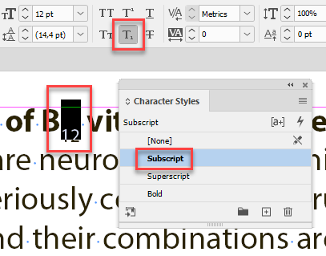
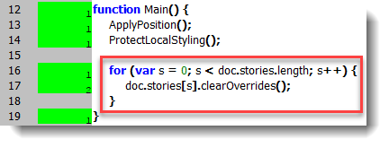
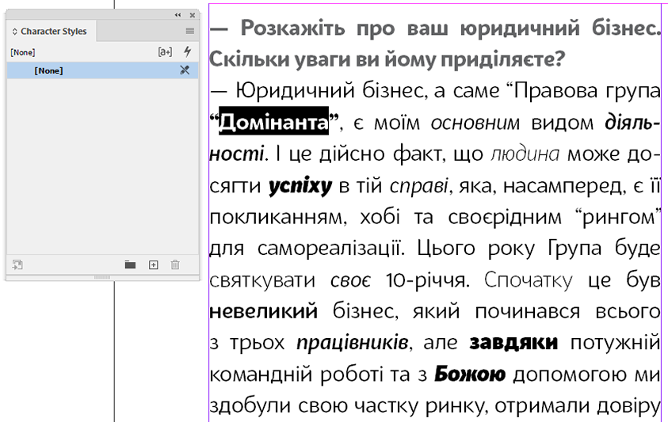
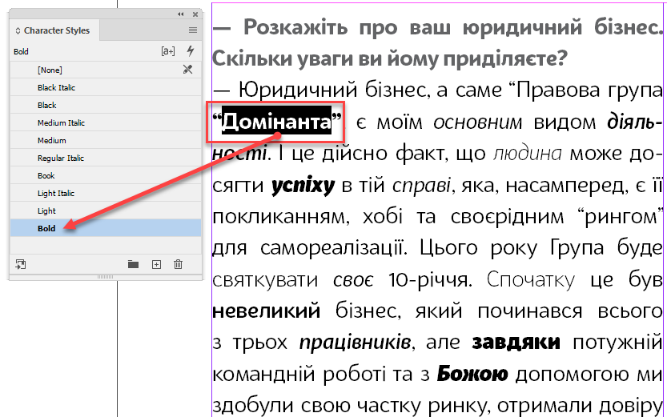

Protect local styling
Script for InDesign. Written and tested in InDesign 2020 (updated in 2022) by Kasyan.
This script is used for processing text created in Word and placed into the current InDesign document.
First, it finds text with super/subscript applied and creates and applies corresponding character styles.

Then it finds the following local formatting and saves them as character styles:
- Italic
- Bold
- Bold Italic
- Light
- Light Italic
- Regular Italic
- Medium
- Medium Italic
- Black
- Black Italic
- Semibold
- Semibold Italic
Note: I removed Book font style because of a bug in InDesign.
Finally, it clears all overrides. The main idea is to keep all the necessary formatting and get rid of all superfluous one.
If you don’t want to clear overrides for some reason, out-comment or remove the following lines in the Main function:

Before

After

Here’s a step-by-step description of the workflow that works for me.
The main idea is to get from Word only basic formatting: say, Bold, Italic and Bold Italic, and I don’t want to use any styles imported from Word because the formatting here is total chaos so I create three paragraph styles from scratch — Body, Footnote and Header — set them to Myriad Pro (to have all font styles) and language, say, to Ukrainian.
- I import text preserving formatting, including footnotes, and using typographer’s quotes.
- Run the Protect local styling - 1.1.jsx script
- Select all the text and apply the ‘Body’ paragraph style and clear overrides.
- Run the process footnotes.jsx script which applies ‘Footnote’ paragraph style to all footnotes clearing overrides.
- Delete all paragraph styles imported from Word — select all unused — replacing with Body (turn on ‘Apply to all’).
Delete all character styles except for those created by the script — Bold, Italic, and Bold Italic — replacing with ‘None’ - Clean up the text a little by GREP find-change: for example, Multiple Return to Single Return and Multiple Space to Single Space. You may want to create other queries to make the text tidy.
- Apply the ‘Header’ paragraph style to headers pressing ALT + SHIFT before clicking the style name. This will remove the ‘Bold’ character style. Note: the headers are usually formatted as Normal style with Bold applied in Word so I have to apply correct styles manually.
I wrote it for my own needs: it’s used as a part of my Export to HTML for business.ua site script.
I also know a few analogous scripts:
- PrepText by Jongware
- PerfectPrepText by Peter Kahrel
- Style Characters by William Campbell from Mars Premedia
If you found my scripts useful and want me to develop new ones, consider supporting me by donating via PayPal directly to my e-mail: askoldich [at] yahoo [dot] com. (Due to PayPal´s restrictions for Ukraine, I can´t have a Donate button on my site.)
Click here to download the script.